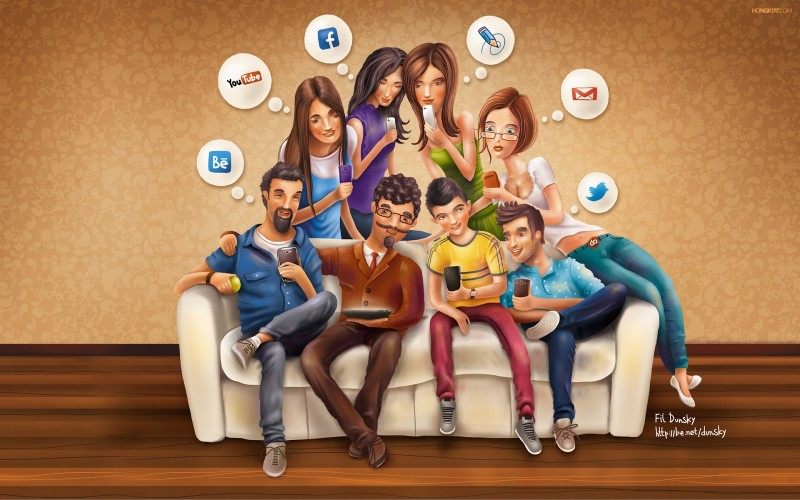
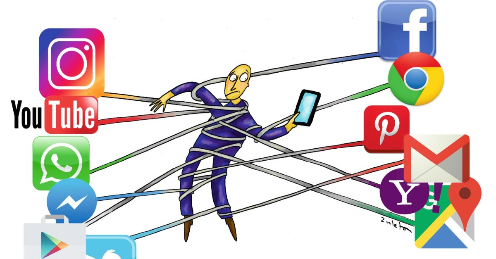
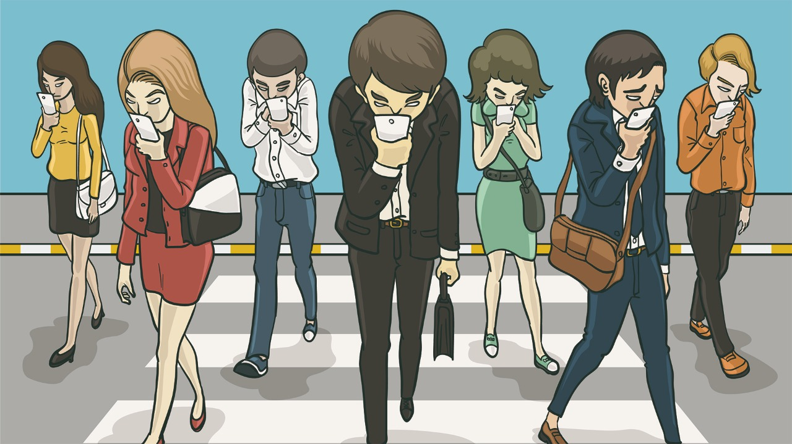

Las buenas noticias son que, esto tiene arreglo. Aquí te dejamos un par de tips para que te sea más fácil.
Tip 1. Ser consciente del tiempo en pantalla
Usar la aplicación "Screen Time" para medir el tiempo que pasas en cada aplicación y controlarlo. Esta es una herramienta genial que sirve para poner límites en los usos del celular.
Tip 2. Entrar a las redes con un propósito
Cada vez que entres a una red social, por ejemplo Instagram, piensa que es lo que quieres ver, y deja para más tarde otro contenido que te pueda interesar.
Tip 3. Ver la vida que hay afuera
Salir de paseo, leer o escribir son actividades que puedes reemplazar en lugar de usar las redes.
Algunos videos que te pueden ayudar
En el siguiente video nos hablan sobre cómo es que usamos nuestros celulares en cada lugar al que vamos y siempre queremos mostrar nuestra “vida perfecta” al mundo a través de las redes sociales. Explica que siempre queremos que la gente vea fotos nuevas de lo que hacemos para que nos aprueben otras personas, aunque no actúes como eres realmente y condicionando constantemente nuestras vidas.
El video hace foco a la adicción en sí a las redes sociales en general. Como la problemática nos puede afectar en muchas áreas de nuestra vida, en la salud y hace incapie en que varias veces sin darnos cuenta le dedicamos más tiempo del que deberíamos. Asi que con ayuda de algunos consejos va a ayudarnos a terminar con la adicción a las redes sociales dándole un uso más consciente.
Este video trata sobre como las Redes Sociales en los últimos años han tenido mucha relevancia entre las personas, más específicamente en los estudiantes que son los que más se ven a afectados por las diferentes aplicaciones que pueden llegar a distraerlos de sus tareas principales, que pueden ser estudiar, hacer tareas del colegio, actividad física, etc. En un uso excesivo puede llegar a ser un problema preocupante. Algunos de estos tips que nombra en el video puedes intentar de a poco ir controlando este problema